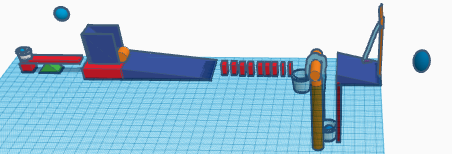
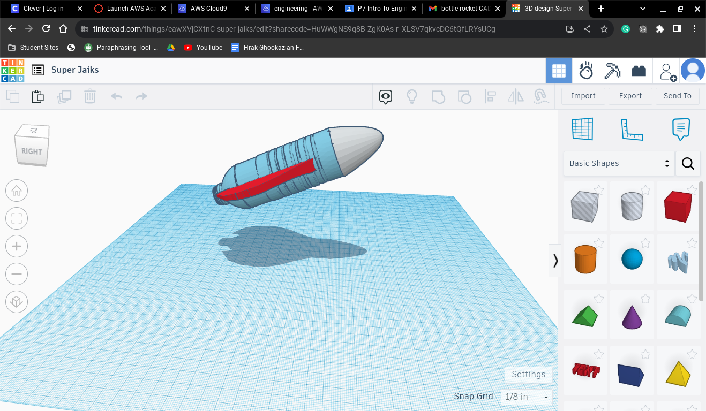

8/25/23 - I had basketball practice and got to drive my dad's new bmw 330i.I learned how to work as a group yesterday but the thing I lked about this week was that I made friends. This weekend I am going to big bear for camping.
My Favorite Website
9/1/23 - I learned about different types of engineerening we made something on cad i maade a pc.I loved making it but i did not win.

9/8/23 My weekend went great,I learned how to use cad,polly lever ramp wher the things that we used for the cad project I thint cutting will be the hardest part. 
9/1/23 this week was very fun we did the rube goldberg project as a team we made a mechine that had to pop a bellon that was on the ground in our project.9/28/23 this week I learned what and how pc is made it was good because i already knew all these stuff but the thing that is good about this week was that we took apart a pc.
I leanerd that the engineerening created prostethics.my hand was the best im my opinion because it was iron man hand

10/13/23 This week i learned about aerospace enginering,the 4 forces are waight drag lift and thrust.I liked everything so fare but I would make the class more fun if loging in to aws was esear for me. 
10/26/23 this week we learned about arospace engineering infact my dad takes partes from dowing we also made rockets and had plenty fun I got to diuld a botle rocket i got the chance to get close with some of my class mates.
10 /26 /23 this week we learned about enviermental engineering i learned that because of this engineering wastwater filterizing was created. I made a filterization botle we turned black water into yellow/clear water.
11/9/23 this week we learned about elecricity and we worked on curcits and made led's flash we learned about resisters and how many risesters there are and what they resist. I lerened how to not explode a led.
1/9/24 the weaight of our brige is 37.3g. the weight held is 1218g. the ratio for our is 32.6g.